Добрый день, уважаемые коллеги. Данная статья будет являться продолжением темы, начатой в посте habrahabr.ru/post/178103.
Продолжим с того момента, когда у нас уже есть значения конструктивных постоянных для двигателя Lego, и можно перейти к конструированию и обсчету робота. В качестве опытного образца остановимся на Segway. Это одна из наиболее показательных задач теории автоматического управления. Привожу конструкцию этого механизма.
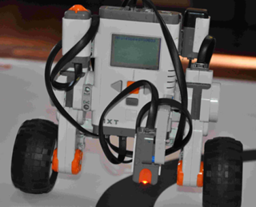
Для начала остановимся на выводе математической модели нашего робота. Выберем обобщенные координаты следующим образом:
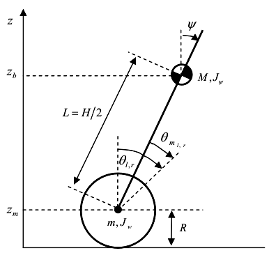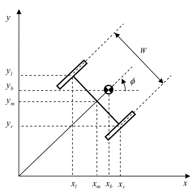
Все обозначения масс и моентов инерции, представлены на рисунке. Предпологается, что наш робот двигается только в одной плоскости XOZ. Мы будем считать Segway, как целостный кирпич, не обсчитывая отдельно моменты инерции двигателей и колес, для уменьшения размера уравнений системы.
Запишем уравнения координат центра масс системы:
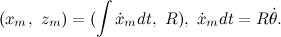
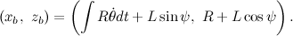
Теперь спокойно записываем уравнение для Лагранжиана:
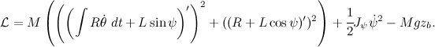
Для автоматизации расчетов воспользуемся системой символьных вычислений Maxima и ее графической средой WxMaxima. Введем полученное выражение в командную строку:
V:expand(
trigsimp(
((diff(integrate(R*diff(Theta(t),t),t)+L*sin(Psi(t)),t))^2+
(diff(R+L*cos(Psi(t)),t))^2)*M/2
+J2*(diff(Psi(t),t))^2/2-M*g*(R+L*cos(Psi(t)))
)
);
tex(V);
Команда \verb|trigsimp| используется для упрощения тригонометрических выражений, а \verb|expand| для раскрытия скобок. Команда \verb|tex| позволяет перевести полученный результат в tex-формат, что позволит вывести формулы в tex-документ или в виде рисунков.
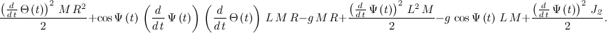
Запишем производные в компактном виде, получаем следующее уравнение:
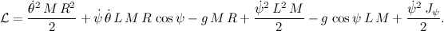
А уравнение Лагранжа запишем следующим образом:
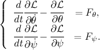
Программа для Maxima:
U:expand(diff(diff(V,diff(Ttheta(t),t)),t)-diff(V,Theta(t)));
Y:expand(diff(diff(V,diff(Psi(t),t)),t)-diff(V,Psi(t)));
tex(U);
tex(Y);
Выполнив указанные дейсвия мы получим:
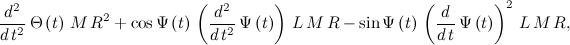
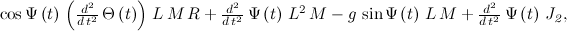
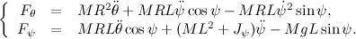
Далее составим уравнения для двигателей нашего Segway, пользуясь материалом предыдущего поста habrahabr.ru/post/178103:
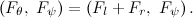
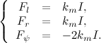
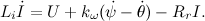
Так как индуктивность обмотки крайне мала, положим L=0:
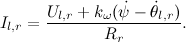
Получим:
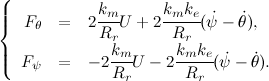
Теперь приравняем наши уравнения моментов, оставив в левой части только элементы с управляющим напряжением:
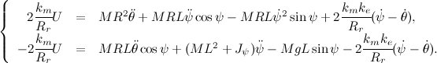
Для того чтобы воспользоваться уравнениеми рассчета матрицы коэффициентов обратной связи, линеаризуем полученную модель. Воспользуемся первым замечательным пределом, подставим 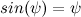 и 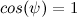. Так же будем пренебрегать оставшимися нелинейностями:
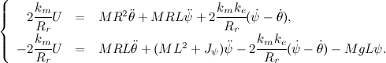
Теперь можно записать полученные уавнения в матричном виде, приняв 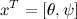:
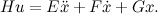
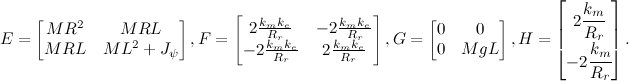
Для нас это непривычный вид, поэтому из этих матриц нужно склеить две матрицы, матрицу состояния нашей системы и матрицу управления. Для этого расширим переменную состояния 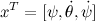, добавив еще одно уравнение:
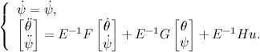
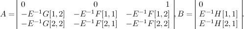
Теперь, мы получили систему третьего порядка и знаем всю динамику и реакцию на управляющие воздействия. Для того, чтобы сделать ее устойчивой, мы должны записать матрицы описывающие заведомо устойчивую систему. Воспользуемся для этого биномом Ньютона 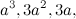 где 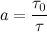. Здесь 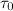 табличное значение времени переходного процесса эталонной модели, 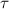 время переходного процесса модели нашего робота, которое мы приняли равным 0.3 секунды. Составив эталонную модель, вычислив ее собственные числа 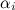, можно применить для вычисления коэффициентов обратной связи формулу Аккермана:
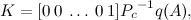
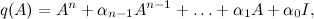
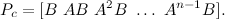
Но не все так гладко, как хотелось бы. Полученные коэффициенты скорее всего будут не рабочими, так как мы не накладывали ограничений на управляющее напряжение, хотя оно всего 7[В]. Чтобы исправить это, придется смоделировать систему и уменьшить коэффициенты для угловых скоростей маятника и колес робота.
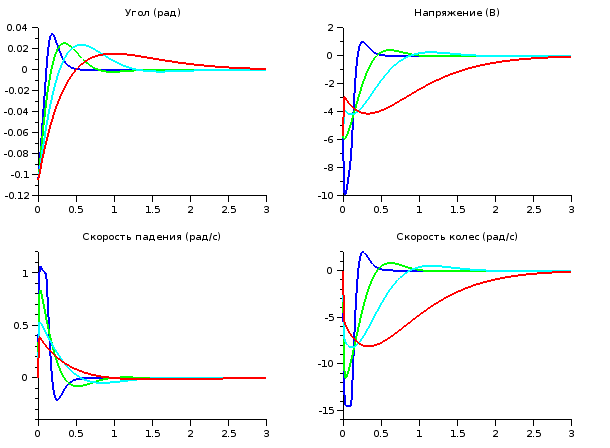
Голубая линия для нас будет самой подходящей по соотношению перерегулирования и времени переходного процесса. После этого у нас получается рабочая программа для робота.
#define GYRO_PORT IN_1
#define LEFT_MOTOR OUT_C
#define RIGHT_MOTOR OUT_B
#define BOTH_MOTORS OUT_BC
#define WAIT_TIME 8.0
#define KGYROANGLE 0.487
#define KSPEED 0.024
#define KGYROSPEED 0.153
#define KPOS 0
task main(){
float time = WAIT_TIME * 0.001;
float segway_angle = 0;
float segway_speed;
float wheel_angle = 0, last_wheel_angle;
float wheel_speed;
float max_voltage;
int u;
SetSensorHTGyro(GYRO_PORT);
Wait(50);
while(true) {
max_voltage = BatteryLevel() / 1000;
segway_speed = (SensorHTGyro(GYRO_PORT) + 2);
segway_angle += segway_speed * time;
last_wheel_angle = wheel_angle;
wheel_angle = (MotorRotationCount(LEFT_MOTOR) + MotorRotationCount(RIGHT_MOTOR)) / 2;
wheel_speed = (wheel_angle - last_wheel_angle) / time;
u = KGYROANGLE * segway_angle +
KSPEED * wheel_speed +
KGYROSPEED * segway_speed +
KPOS * wheel_angle;
u = u * 100 / max_voltage;
if (abs(u) > 100){
u = sign(u) * 100;
}
OnFwd(BOTH_MOTORS, u);
Wait(WAIT_TIME);
}
}